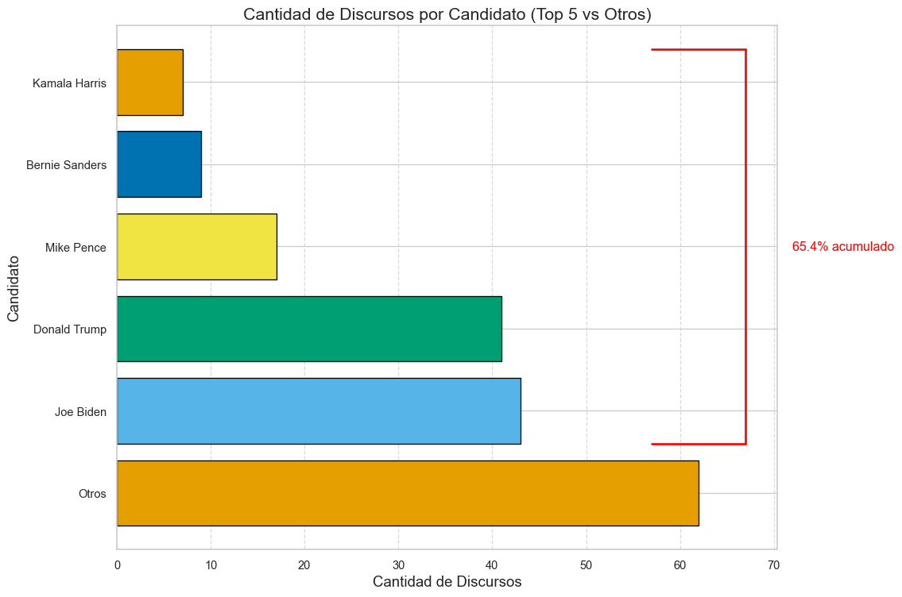
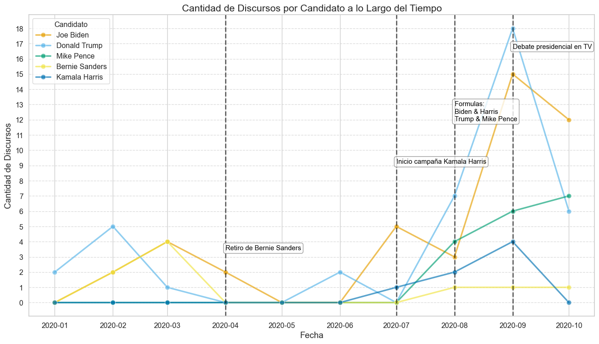
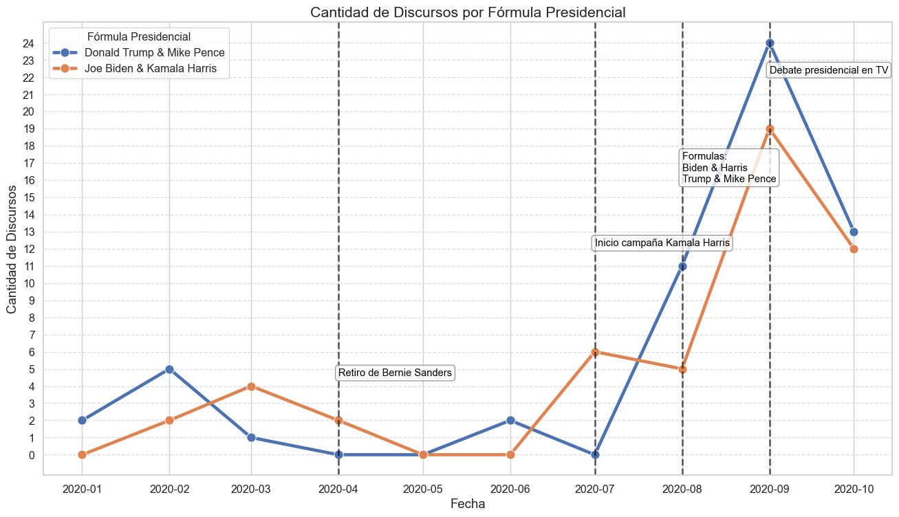
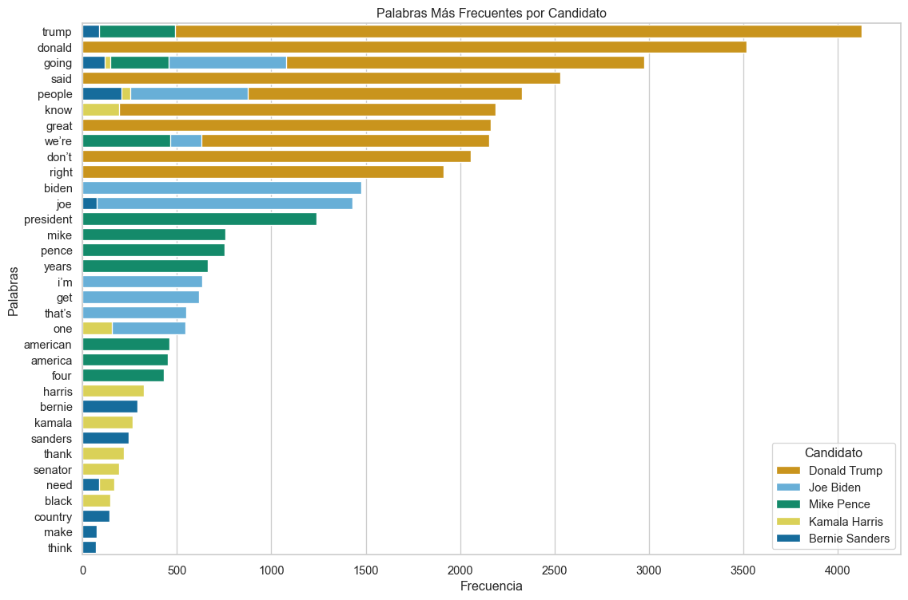
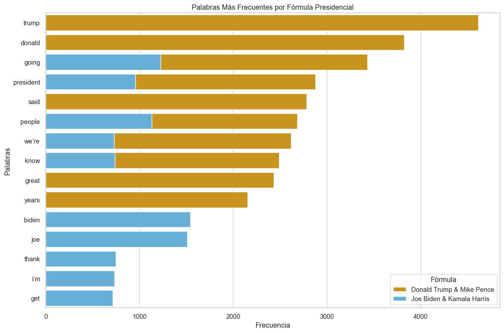
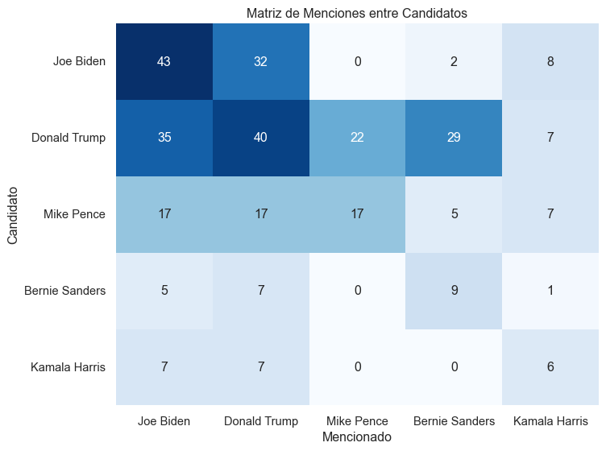
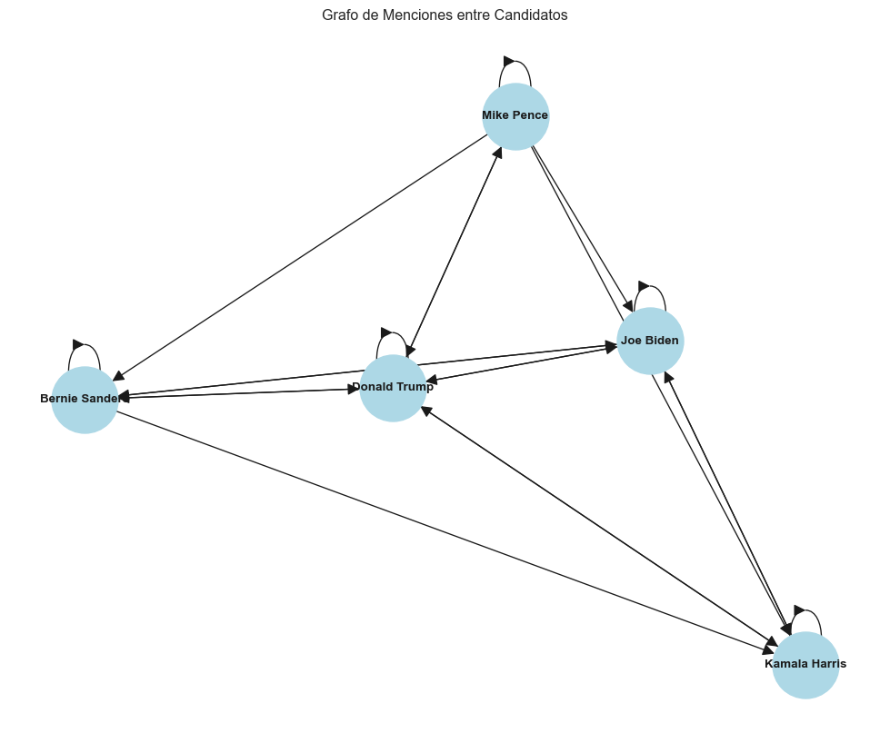

from time import time
from pathlib import Path
import pandas as pd
import matplotlib.pyplot as plt
import seaborn as sns
import networkx as nx
import numpy as np
from tabulate import tabulate
import re
from collections import Counter
from nltk.corpus import stopwords
import nltk
sns.set_theme(style="whitegrid")Tarea 1
Introducción a la Ciencia de Datos 2025
Ignacio Campón & Mauro Loprete
Parte 1: Cargado y Limpieza de datos
df_speeches = pd.read_csv('../data/us_2020_election_speeches.csv')
df_speeches| speaker | title | text | date | location | type | |
|---|---|---|---|---|---|---|
| 0 | David Perdue | Georgia Sen. David Perdue Speech Transcript at... | David Perdue: (00:01)\nHow great is it to be b... | Oct 16, 2020 | Macon, Georgia | Campaign Speech |
| 1 | Joe Biden | Joe Biden Southfield, MI Speech on Health Care... | Joe Biden: (00:00)\nHello, Michigan. Hi, how a... | Oct 16, 2020 | Southfield ,Michigan | Campaign Speech |
| 2 | Donald Trump | Donald Trump Speech Transcript ‘Protecting Ame... | President Trump: (00:30)\nThank you. What a ni... | Oct 16, 2020 | Fort Myers, Florida | Campaign Speech |
| 3 | Joe Biden | Joe Biden ABC Town Hall Transcript October 15 | George Stephanopoulos: (00:41)\nHey, and welco... | Oct 15, 2020 | ABC | Town Hall |
| 4 | Donald Trump | Donald Trump NBC Town Hall Transcript October 15 | Savannah Guthrie: (03:50)\nIt’s nothing but no... | Oct 15, 2020 | NBC | Town Hall |
| ... | ... | ... | ... | ... | ... | ... |
| 264 | Bernie Sanders | Bernie Sanders Speech Transcript: Sanders Spea... | Bernie Sanders: (00:00)\nJust want to take thi... | Feb 6, 2020 | Iowa | Campaign Speech |
| 265 | Democratic Candidates | Transcript: Speeches at the Iowa Caucuses – Be... | Bernie Sanders: (00:08)\nThank you. Thank you.... | Feb 4, 2020 | Iowa | Campaign Speech |
| 266 | Donald Trump | Donal Trump Iowa Rally Transcript: Trump Holds... | Donald Trump: (00:24)\nI worked so hard for th... | Jan 30, 2020 | Des Moines, Iowa | Campaign Speech |
| 267 | Donald Trump | Donald Trump New Jersey Rally Speech Transcrip... | Donald Trump: (01:22)\nThank you. Thank you. I... | Jan 28, 2020 | Wildwood, New Jersey | Campaign Speech |
| 268 | Democratic Candidates | January Iowa Democratic Debate Transcript | Wolf Blitzer: (00:00)\nAll right, so let’s beg... | Jan 15, 2020 | Des Moines, Iowa | Debate |
269 rows × 6 columns
A) Datos faltantes
La base de datos se compone de un conjunto de 269 observaciones y 6 variables que contienen discursos de campaña, discursos de ayuntamiento, entrevistas, debates y más. Los discursos estan ingresados a la base por orador, título, contenido hablado, fecha, localidad y tipo de discuro. En particular se analizaran los discursos de campaña política, y se hará enfásis en los 5 prinipales oradores que seán seleccionados por mayor frecuencia de discursos.
Para seleccionar esta categoría de discursos, primero se realiza un análisis de datos faltantes en la base. Para ello primero verificamos los tipos de variables con los que se cuentan los cuáles son 3 tipos. Variables categóricas; speaker, describe el nombre del orador, type es el tipo de discurso y location la ciudad y el estado en el que se hizo. Texto; title título del discruso y text contenido del mismo. Fecha: date contiene la fecha en formato año/dia/mes . Los datos faltantes por variable se describen en la tabla **__**:
| Variable | Cantidad de Nulos |
|---|---|
| speaker | 3 |
| title | 0 |
| text | 0 |
| date | 0 |
| location | 18 |
| type | 21 |
Para verificar la calidad de los datos, realizamos una visualización manual en busca de datos incompletos, datos inconsistentes, datos con ruido que probablemente sean provenientes de una mala producción y/o procesamiento de los mismos. La busqueda no arroja mala calidad de los mismos, resultando haber una buena calidad de los mismos.
# visualizamos los datos faltantes por variable
n = len(df_speeches)
count = df_speeches.count()
res = n-count
# creamos tabla con los datos faltantes
n_count_df = res.reset_index()
n_count_df.columns = ['Variable', 'Cantidad de Nulos']
#print(tabulate(n_count_df, headers='keys', tablefmt='github', showindex=False))#df_speeches.dtypes
#df_speeches.describe()df_speeches["date"] = pd.to_datetime(df_speeches["date"])
def get_var_category(series):
unique_count = series.nunique(dropna=False)
total_count = len(series)
if pd.api.types.is_numeric_dtype(series):
return 'Numerical'
elif pd.api.types.is_datetime64_dtype(series):
return 'Date'
elif unique_count==total_count:
return 'Text (Unique)'
else:
return 'Categorical'
def print_categories(df):
for column_name in df.columns:
print(column_name, ": ", get_var_category(df[column_name]))
#print_categories(df_speeches)# how many types and obs are? creamos tabla con los tipos de discurso
type_counts = df_speeches["type"].value_counts().reset_index()
type_counts.columns = ["Tipo de Discurso", "Cantidad"]
#print(tabulate(type_counts, headers="keys", tablefmt="github", showindex=False))La cantidad de observaciones por type de discurso se resumen en la tabla **__**. Se puede observar que 180 de las 269 observaciones corresponden a discursos de campaña los cuáles serán nuestra muestra de análisis.
| Tipo de Discurso | Cantidad |
|---|---|
| Campaign Speech | 180 |
| Town Hall | 18 |
| Interview | 14 |
| Debate | 9 |
| Endorsement | 8 |
| Statement | 8 |
| Roundtable | 8 |
| Press Conference | 2 |
| Voter Mobilization | 1 |
A modo informativo, los discursos de campaña toman fechas que van desde el 15 de Enero de 2020 al 16 de Octubre de 2020, y la mediana de los mismos toma fecha en fines de Agosto, dando pie a que la mayoria de los mismos toma parte en los últimos meses de campaña.
#df_speeches.describe()# filter campaign speeches
speeches = df_speeches[df_speeches["type"] == "Campaign Speech"]
# group speeches by speaker
#speeches["speaker"].value_counts()
# group speeches by speaker and date
#speeches.groupby(["date", "speaker"]).value_counts()
# filter speeches by donald trump
#speeches[speeches["speaker"] == "Donald Trump"]
#print(speeches.describe())
top5_speakers = speeches["speaker"].value_counts().head(5).index
top_speeches = speeches[speeches["speaker"].isin(top5_speakers)]# verificar si hay valores nulos después de la conversión
if top_speeches["date"].isnull().any():
print("Advertencia: Hay valores nulos en la columna 'date' después de la conversión.")
# agrupamos por mes y por candidato
top_speeches["month"] = top_speeches["date"].dt.to_period("M")
top_speeches_grouped = top_speeches.groupby(["month", "speaker"]).size().reset_index(name="count")
# Convertir el período a una fecha para el gráfico
top_speeches_grouped["month_plot"] = top_speeches_grouped["month"].dt.to_timestamp()
# agregamos 0 a los meses que no tienen discursos
top_speeches["date"] = pd.to_datetime(top_speeches["date"], errors="coerce")
top_speeches["month"] = top_speeches["date"].dt.to_period("M")
grouped = top_speeches.groupby(["month", "speaker"]).size().reset_index(name="count")
grouped["month_plot"] = grouped["month"].dt.to_timestamp()
all_months = pd.period_range(start=grouped["month"].min(), end=grouped["month"].max(), freq="M")
all_speakers = top_speeches["speaker"].unique()
full_index = pd.MultiIndex.from_product([all_months, all_speakers], names=["month", "speaker"])
full_df = pd.DataFrame(index=full_index).reset_index()
full_merged = pd.merge(full_df, grouped, on=["month", "speaker"], how="left")
full_merged["count"] = full_merged["count"].fillna(0).astype(int)
full_merged["month_plot"] = full_merged["month"].dt.to_timestamp()
custom_palette = ["#E69F00", "#56B4E9", "#009E73", "#F0E442", "#0072B2"]
# Agrupamos por candidato y calculamos el total
lollipop_data = speeches.groupby("speaker").size().reset_index(name="count")
# Ordenamos por cantidad de discursos
lollipop_data = lollipop_data.sort_values(by="count", ascending=False)
# Calculamos el total y los acumulados
total_count = lollipop_data["count"].sum()
lollipop_data["percentage"] = lollipop_data["count"] / total_count
lollipop_data["cumulative_percentage"] = lollipop_data["percentage"].cumsum()
# Agregamos la fila "Otros"
top5_data = lollipop_data.head(5)
otros_count = total_count - top5_data["count"].sum()
otros_row = pd.DataFrame([["Otros", otros_count, otros_count / total_count, 1.0]],
columns=["speaker", "count", "percentage", "cumulative_percentage"])
lollipop_data_extended = pd.concat([top5_data, otros_row], ignore_index=True)
chocolate_data = lollipop_data_extended.copy()
chocolate_data = chocolate_data.sort_values(by="count", ascending=False)
otros_count = speeches["speaker"].nunique() - 5
chocolate_data["cumulative_percentage"] = chocolate_data["count"].cumsum() / chocolate_data["count"].sum()
plt.figure(figsize=(12, 8))
bars = plt.barh(
chocolate_data["speaker"],
chocolate_data["count"],
color=custom_palette,
edgecolor="black"
)
threshold = 0.654
cumulative_percentage_series = chocolate_data["cumulative_percentage"]
threshold_index = cumulative_percentage_series[cumulative_percentage_series <= threshold].index[-1]
y_start = bars[1].get_y()
y_end = None
for bar, speaker in zip(bars, chocolate_data["speaker"]):
if speaker == threshold_index:
y_end = bar.get_y() + bar.get_height()
break
if y_end is None:
print(f"No se encontró la barra para el índice: {threshold_index}")
y_end = bars[-1].get_y() + bars[-1].get_height()
x_position = chocolate_data["count"].max() + 5
plt.plot([x_position, x_position], [y_start, y_end], color="red", linewidth=2)
plt.plot([x_position, x_position - 10], [y_start, y_start], color="red", linewidth=2)
plt.plot([x_position, x_position - 10], [y_end, y_end], color="red", linewidth=2)
plt.text(
x_position + 5, (y_start + y_end) / 2,
"65.4% acumulado", fontsize=12, color="red", va="center", ha="left"
)
plt.title("Cantidad de Discursos por Candidato (Top 5 vs Otros)", fontsize=16)
plt.xlabel("Cantidad de Discursos", fontsize=14)
plt.ylabel("Candidato", fontsize=14)
plt.grid(axis="x", linestyle="--", alpha=0.7)
plt.tight_layout()
plt.show()C:\Users\campo\AppData\Local\Temp\ipykernel_20696\4045876432.py:6: SettingWithCopyWarning:
A value is trying to be set on a copy of a slice from a DataFrame.
Try using .loc[row_indexer,col_indexer] = value instead
See the caveats in the documentation: https://pandas.pydata.org/pandas-docs/stable/user_guide/indexing.html#returning-a-view-versus-a-copy
top_speeches["month"] = top_speeches["date"].dt.to_period("M")
C:\Users\campo\AppData\Local\Temp\ipykernel_20696\4045876432.py:13: SettingWithCopyWarning:
A value is trying to be set on a copy of a slice from a DataFrame.
Try using .loc[row_indexer,col_indexer] = value instead
See the caveats in the documentation: https://pandas.pydata.org/pandas-docs/stable/user_guide/indexing.html#returning-a-view-versus-a-copy
top_speeches["date"] = pd.to_datetime(top_speeches["date"], errors="coerce")
C:\Users\campo\AppData\Local\Temp\ipykernel_20696\4045876432.py:14: SettingWithCopyWarning:
A value is trying to be set on a copy of a slice from a DataFrame.
Try using .loc[row_indexer,col_indexer] = value instead
See the caveats in the documentation: https://pandas.pydata.org/pandas-docs/stable/user_guide/indexing.html#returning-a-view-versus-a-copy
top_speeches["month"] = top_speeches["date"].dt.to_period("M")No se encontró la barra para el índice: 0
Los 5 candidatos con mas discursos de campaña representan el 65% de todos los discursos registrados y se componen por los oradores Kamala Harris, Bernie Sanders, Mike Pence, Donald Trump y Joe Biden, dejando de lado 53 oradores que componen el 35% restante de discursos registrados. En base a los discursos de estos 5 candidatos realizaremos el análisis de aquí en más.
B) Gráfica para visualizar discursos de los candidatos por año
Si consideramos los discursos a lo largo del tiempo podemos identificar momentos clave de campaña de los mismos, para ello construimos la figura **__** que constituye un gráfico de líneas y puntos a lo largo de un eje temporal.
plt.figure(figsize=(14, 8))
sns.lineplot(data=full_merged, x="month_plot", y="count", hue="speaker", marker="o", palette=custom_palette, linewidth=2.5, markersize=8, alpha=0.65)
plt.title("Cantidad de Discursos por Candidato a lo Largo del Tiempo", fontsize=16)
plt.xlabel("Fecha", fontsize=14)
plt.ylabel("Cantidad de Discursos", fontsize=14)
plt.legend(title="Candidato", fontsize=12)
plt.xticks(rotation=0, fontsize=12)
plt.yticks(range(0, np.max(full_merged["count"]) + 1, 1), fontsize=12)
plt.grid(axis="y", linestyle="--", alpha=0.7)
eventos = [
{"fecha": "2020-04", "texto": "Retiro de Bernie Sanders", "altura": 0.2},
{"fecha": "2020-07", "texto": "Inicio campaña Kamala Harris", "altura": 0.5},
{"fecha": "2020-08", "texto": "Formulas: \nBiden & Harris\nTrump & Mike Pence", "altura": 0.7},
{"fecha": "2020-09", "texto": "Debate presidencial en TV", "altura": 0.9},
]
for evento in eventos:
fecha = pd.Timestamp(evento["fecha"])
plt.axvline(fecha, color="black", linestyle="--", alpha=0.6, linewidth=2)
plt.text(fecha, plt.ylim()[1]*evento["altura"], evento["texto"],
rotation=0, fontsize=11, color="black",
verticalalignment="top", horizontalalignment="left",
bbox=dict(boxstyle="round,pad=0.3", facecolor="white", edgecolor="gray", alpha=0.8))
plt.tight_layout()
plt.show()
Como se puede ver en la figura anterior, la campaña de los candidatos arranca en Enero 2020, con pocos discursos mensuales, no más de 5. En Abril se observa como la cantidad de discursos de Bernie bajan a 0, lo cual coincide con su anuncio de retirada de la campaña y su apoyo a Joe Biden por parte del partido Demócrata de EE.UU. por eso se explica que se visualiza un único discurso de este candidato en los últimos 3 meses de campaña. Por otro lado, en Julio se observa el inicio de camapaña de Kamala Harris y posteriormente en Agosto su anuncio de formula presidencial junto a Joe Biden como presidente. En Septiembre se alcanza el pico de discursos de los 2 candidatos principales a preseidente de los EE.UU. producto del debate presidencial que es trasmitido en todo el país y la llegada de las elecciones en el mes siguiente.
La figura **__** muestra los discursos mensuales de las formulas presidenciales, este gráfico muestra de forma agregada los discursos de Joe Biden & Kamala Harris y Donald Trump & Mike Pence; obsérvese como en Julio comienza a incrementarse la cantidad de discursos por fórmula.
# creamos las fórmulas presidenciales
formula_map = {
"Joe Biden": "Joe Biden & Kamala Harris",
"Kamala Harris": "Joe Biden & Kamala Harris",
"Donald Trump": "Donald Trump & Mike Pence",
"Mike Pence": "Donald Trump & Mike Pence"
}
full_merged["formula"] = full_merged["speaker"].map(formula_map)
# filtramos a sanders
formula_df = full_merged[full_merged["formula"].notnull()]
formula_grouped = formula_df.groupby(["month", "formula"]).agg({
"count": "sum"
}).reset_index()
formula_grouped["month_plot"] = formula_grouped["month"].dt.to_timestamp()
plt.figure(figsize=(14, 8))
sns.lineplot(data=formula_grouped, x="month_plot", y="count", hue="formula", marker="o", linewidth=3.5, markersize=10)
plt.title("Cantidad de Discursos por Fórmula Presidencial", fontsize=16)
plt.xlabel("Fecha", fontsize=14)
plt.ylabel("Cantidad de Discursos", fontsize=14)
plt.legend(title="Fórmula Presidencial", fontsize=12)
plt.xticks(rotation=0, fontsize=12)
plt.yticks(range(0, formula_grouped["count"].max() + 1), fontsize=12)
plt.grid(axis="y", linestyle="--", alpha=0.7)
eventos = [
{"fecha": "2020-04", "texto": "Retiro de Bernie Sanders", "altura": 0.2},
{"fecha": "2020-07", "texto": "Inicio campaña Kamala Harris", "altura": 0.5},
{"fecha": "2020-08", "texto": "Formulas: \nBiden & Harris\nTrump & Mike Pence", "altura": 0.7},
{"fecha": "2020-09", "texto": "Debate presidencial en TV", "altura": 0.9},
]
for evento in eventos:
fecha = pd.Timestamp(evento["fecha"])
plt.axvline(fecha, color="black", linestyle="--", alpha=0.6, linewidth=2)
plt.text(fecha, plt.ylim()[1]*evento["altura"], evento["texto"],
rotation=0, fontsize=11, color="black",
verticalalignment="top", horizontalalignment="left",
bbox=dict(boxstyle="round,pad=0.3", facecolor="white", edgecolor="gray", alpha=0.8))
plt.tight_layout()
plt.show()
top_speeches["date"] = pd.to_datetime(top_speeches["date"], errors="coerce")
# asignaciones de bimestres
def assign_bimester(date):
month = date.month
if month in [1, 2]:
return "Ene-Feb"
elif month in [3, 4]:
return "Mar-Abr"
elif month in [5, 6]:
return "May-Jun"
elif month in [7, 8]:
return "Jul-Ago"
elif month in [9, 10]:
return "Sep-Oct"
else:
return "Nov-Dic" # Opcional, si hay datos en nov-dic
top_speeches["bimester"] = top_speeches["date"].apply(assign_bimester)
bimester_data = top_speeches.groupby(["bimester", "speaker"]).size().reset_index(name="count")
# ordenamos los bimestres
ordered_bimesters = ["Ene-Feb", "Mar-Abr", "May-Jun", "Jul-Ago", "Sep-Oct"]
bimester_data["bimester"] = pd.Categorical(bimester_data["bimester"], categories=ordered_bimesters, ordered=True)
bimester_data = bimester_data.sort_values(["bimester", "count"], ascending=[True, False])
fig, axes = plt.subplots(nrows=5, ncols=1, figsize=(10, 18), sharex=True)
for i, bim in enumerate(ordered_bimesters):
ax = axes[i]
data = bimester_data[bimester_data["bimester"] == bim].sort_values(by="count", ascending=True)
ax.barh(data["speaker"], data["count"], color="skyblue", alpha=0.7)
ax.set_title(f"Bimestre: {bim}")
ax.set_xlabel("Cantidad de Discursos")
ax.set_ylabel("Candidato")
ax.set_xlim(left=0)
ax.set_xticks(np.arange(0, data["count"].max() + 1))
plt.tight_layout()
#plt.show()
plt.close()C:\Users\campo\AppData\Local\Temp\ipykernel_20696\1495649151.py:1: SettingWithCopyWarning:
A value is trying to be set on a copy of a slice from a DataFrame.
Try using .loc[row_indexer,col_indexer] = value instead
See the caveats in the documentation: https://pandas.pydata.org/pandas-docs/stable/user_guide/indexing.html#returning-a-view-versus-a-copy
top_speeches["date"] = pd.to_datetime(top_speeches["date"], errors="coerce")
C:\Users\campo\AppData\Local\Temp\ipykernel_20696\1495649151.py:20: SettingWithCopyWarning:
A value is trying to be set on a copy of a slice from a DataFrame.
Try using .loc[row_indexer,col_indexer] = value instead
See the caveats in the documentation: https://pandas.pydata.org/pandas-docs/stable/user_guide/indexing.html#returning-a-view-versus-a-copy
top_speeches["bimester"] = top_speeches["date"].apply(assign_bimester)Parte C) Limpieza de texto
def clean_text(df, column_name):
result = df[column_name]
# quitar todo hasta el primer \n
result = result.str.replace(r"^[^\n]*\n", "", regex=True)
# convertir a minúsculas
result = result.str.lower()
# eliminar signos de puntuación definidos
result = result.str.replace(r"[{}\n]".format(re.escape("[],:?.!;\"'")), " ", regex=True)
# eliminar espacios extra
result = result.str.replace(r"\s+", " ", regex=True).str.strip()
return result
# creamos columna clentext
top_speeches["CleanText"] = clean_text(top_speeches, "text")
# Convierte párrafos en listas "palabra1 palabra2 palabra3" -> ["palabra1", "palabra2", "palabra3"]
top_speeches["WordList"] = top_speeches["CleanText"].str.split()
# Veamos la nueva columna creada: notar que a la derecha tenemos una lista: [palabra1, palabra2, palabra3]
#top_speeches[["CleanText", "WordList"]]C:\Users\campo\AppData\Local\Temp\ipykernel_20696\23623688.py:19: SettingWithCopyWarning:
A value is trying to be set on a copy of a slice from a DataFrame.
Try using .loc[row_indexer,col_indexer] = value instead
See the caveats in the documentation: https://pandas.pydata.org/pandas-docs/stable/user_guide/indexing.html#returning-a-view-versus-a-copy
top_speeches["CleanText"] = clean_text(top_speeches, "text")
C:\Users\campo\AppData\Local\Temp\ipykernel_20696\23623688.py:22: SettingWithCopyWarning:
A value is trying to be set on a copy of a slice from a DataFrame.
Try using .loc[row_indexer,col_indexer] = value instead
See the caveats in the documentation: https://pandas.pydata.org/pandas-docs/stable/user_guide/indexing.html#returning-a-view-versus-a-copy
top_speeches["WordList"] = top_speeches["CleanText"].str.split()Para normalizar el texto realizamos unas pequeñas modificaciones en la función de , agregamos una sentencia que elimina los signos de puntuacion definidos y los reemplaza por espacios. Específicamente, eliminamos los caracteres: [ ] , : ? . ! ; ” ’, además de saltos de línea (\n), usando una expresión regular. Este proceso nos permite limpiar el texto antes de realizar análisis de texto.
Parte 2)
Parte A)
# stopwords es un diccionario de palabras que no aportan significado
nltk.download('stopwords')
stop_words = set(stopwords.words('english'))
if "WordList" not in top_speeches.columns:
top_speeches["WordList"] = top_speeches["CleanText"].str.split()
custom_stopwords = {"it’s"}
top_speeches["FilteredWordList"] = top_speeches["WordList"].apply(
lambda words: [
word for word in words
if word not in stop_words and word not in custom_stopwords and len(word) > 2
]
)
# contar palabras por candidato
word_counts = {}
for speaker in top_speeches["speaker"].unique():
all_words = top_speeches[top_speeches["speaker"] == speaker]["FilteredWordList"].explode()
word_counts[speaker] = Counter(all_words)
# crear un df con las palabras más frecuentes
top_words = pd.DataFrame([
{"speaker": speaker, "word": word, "count": count}
for speaker, counts in word_counts.items()
for word, count in counts.most_common(10)
])
# reordenamos por frecuencia
top_words = top_words.sort_values(by=["count"], ascending=[False])
plt.figure(figsize=(12, 8))
sns.barplot(data=top_words, x="count", y="word", hue="speaker", dodge=False, palette=custom_palette)
plt.title("Palabras Más Frecuentes por Candidato")
plt.xlabel("Frecuencia")
plt.ylabel("Palabras")
plt.legend(title="Candidato")
plt.tight_layout()
plt.show()[nltk_data] Downloading package stopwords to
[nltk_data] C:\Users\campo\AppData\Roaming\nltk_data...
[nltk_data] Unzipping corpora\stopwords.zip.
C:\Users\campo\AppData\Local\Temp\ipykernel_20696\1985702901.py:10: SettingWithCopyWarning:
A value is trying to be set on a copy of a slice from a DataFrame.
Try using .loc[row_indexer,col_indexer] = value instead
See the caveats in the documentation: https://pandas.pydata.org/pandas-docs/stable/user_guide/indexing.html#returning-a-view-versus-a-copy
top_speeches["FilteredWordList"] = top_speeches["WordList"].apply(
#ahora construimos grafico de palabras mas frecuentes por formulas presidenciales
top_speeches["formula"] = top_speeches["speaker"].map(formula_map)
formula_speeches = top_speeches.dropna(subset=["formula"])
formula_word_counts = {}
for formula in formula_speeches["formula"].unique():
all_words = formula_speeches[formula_speeches["formula"] == formula]["FilteredWordList"].explode()
formula_word_counts[formula] = Counter(all_words)
top_formula_words = pd.DataFrame([
{"formula": formula, "word": word, "count": count}
for formula, counts in formula_word_counts.items()
for word, count in counts.most_common(10)
])
top_formula_words = top_formula_words.sort_values(by="count", ascending=False)
plt.figure(figsize=(12, 8))
sns.barplot(data=top_formula_words, x="count", y="word", hue="formula", dodge=False, palette=custom_palette[:2])
plt.title("Palabras Más Frecuentes por Fórmula Presidencial")
plt.xlabel("Frecuencia")
plt.ylabel("Palabras")
plt.legend(title="Fórmula")
plt.tight_layout()
plt.show()C:\Users\campo\AppData\Local\Temp\ipykernel_20696\2785974830.py:2: SettingWithCopyWarning:
A value is trying to be set on a copy of a slice from a DataFrame.
Try using .loc[row_indexer,col_indexer] = value instead
See the caveats in the documentation: https://pandas.pydata.org/pandas-docs/stable/user_guide/indexing.html#returning-a-view-versus-a-copy
top_speeches["formula"] = top_speeches["speaker"].map(formula_map)
TODO: Ordenar todo esto y redactar (Es de la parte 2)
candidates = top_speeches["speaker"].unique()
mentions_matrix = pd.DataFrame(0, index=candidates, columns=candidates)
# Menciones entre candidatos (sin contar a sí mismos) # FIX: si menciona a mas de uno se cuenta en cada candidato
for speaker in candidates:
for mentioned in candidates:
mentions_matrix.loc[speaker, mentioned] = top_speeches[
(top_speeches["speaker"] == speaker) &
(top_speeches["CleanText"].str.contains(mentioned, case=False))
].shape[0]
# Visualizar la matriz
plt.figure(figsize=(8, 6))
sns.heatmap(mentions_matrix, annot=True, fmt="d", cmap="Blues", cbar=False)
plt.title("Matriz de Menciones entre Candidatos")
plt.xlabel("Mencionado")
plt.ylabel("Candidato")
plt.tight_layout()
plt.show()
# Crear un grafo dirigido
G = nx.from_pandas_adjacency(mentions_matrix, create_using=nx.DiGraph)
plt.figure(figsize=(10, 8))
pos = nx.spring_layout(G)
nx.draw(G, pos, with_labels=True, node_size=3000, node_color="lightblue", font_size=10, font_weight="bold", arrowsize=20)
plt.title("Grafo de Menciones entre Candidatos")
plt.show()